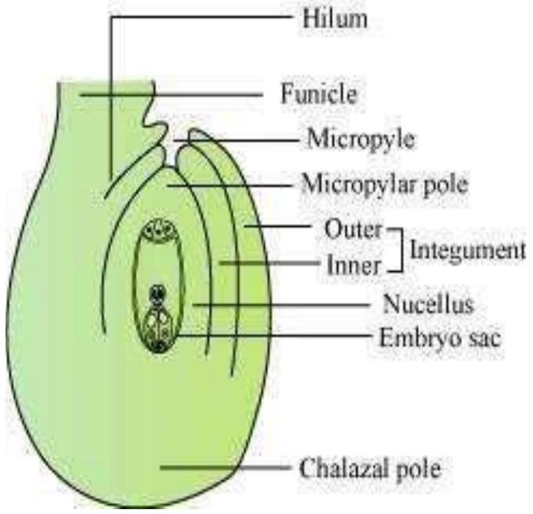
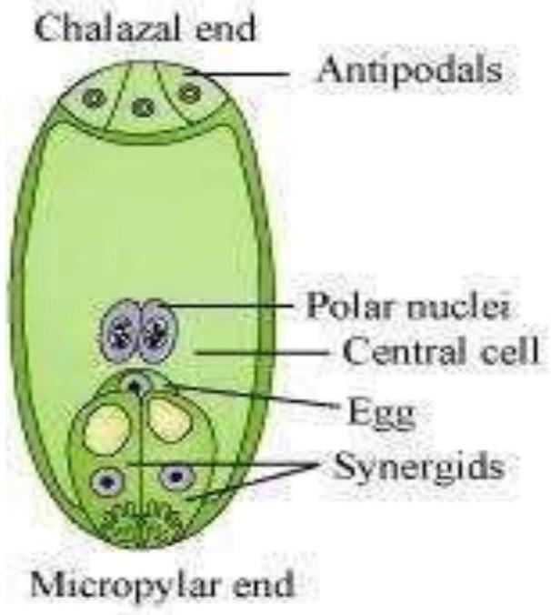

Name the parts of an angiosperm flower in which development of male and female gametophyte take place.
Differentiate between microsporogenesis and megasporogenesis.
Which type of cell division occurs during these events? Name the structures formed at the end of these two events.
| Microsporogenesis | Megasporogenesis | |
|---|---|---|
| 1. | It is the process of the formation of microspore tetrads from a microspore mother cell through meiosis. | It is the process of the formation of the four megaspores from a megaspore mother cell in the region of the nucellus through meiosis |
| 2. | It occurs inside the pollen sac of the anther. | It occurs inside the ovule. |
Arrange the following terms in the correct developmental sequence: Pollen grain, sporogenous tissue, microspore tetrad, pollen mother cell, male gametes.

With a neat, labelled diagram, describe the parts of a typical angiosperm ovule.
What is meant by monosporic development of female gametophyte?

With a neat diagram explain the 7 -celled, 8 -nucleate nature of the female gametophyte.
What are chasmogamous flowers? Can cross-pollination occur in cleistogamous flowers? Give reasons for your answer.
Mention two strategies evolved to prevent self-pollination in flowers.
What is self-incompatibility? Why does self-pollination not lead to seed formation in self-incompatible species?
What is bagging technique? How is it useful in a plant breeding programme?
What is triple fusion? Where and how does it take place? Name the nuclei involved in triple fusion.
Why do you think the zygote is dormant for sometime in a fertilised ovule?
Differentiate between:
hypocotyl and epicotyl
| Hypocotyl | Epicotyl | |
|---|---|---|
| 1. | The portion of the embryonal axis which lies below the cotyledon in a dicot embryo is known as the hypocotyl. | The portion of the embryonal axis which lies above the cotyledon in a dicot embryo is known as the epicotyl. |
| 2. | It terminates with the radicle. | It terminates with the plumule. |
coleoptile and coleorrhiza
| Coleoptile | Coleorrhiza |
|---|---|
| It is a conical protective sheath that encloses the plumule in a monocot seed. | It is an undifferentiated sheath that encloses the radicle and the root cap in a monocot seed. |
integument and testa
| Integument | Testa |
|---|---|
| It is the outermost covering of an ovule. It provides protection to it. | It is the outermost covering of a seed. |
perisperm and pericarp
| Perisperm | Pericarp |
|---|---|
| It is the residual nucellus which persists. It is present in some seeds such as beet and black pepper. | It is the ripened wall of a fruit, which develops from the wall of an ovary. |
Why is apple called a false fruit? Which part(s) of the flower forms the fruit?
What is meant by emasculation? When and why does a plant breeder employ this technique?
If one can induce parthenocarpy through the application of growth substances, which fruits would you select to induce parthenocarpy and why?
Explain the role of tapetum in the formation of pollen-grain wall.
What is apomixis and what is its importance?